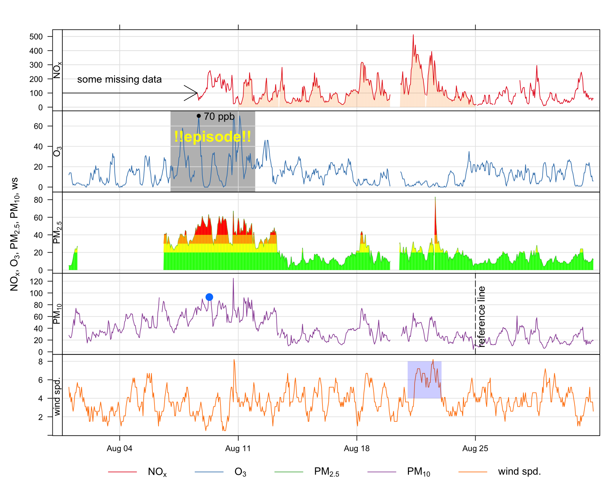
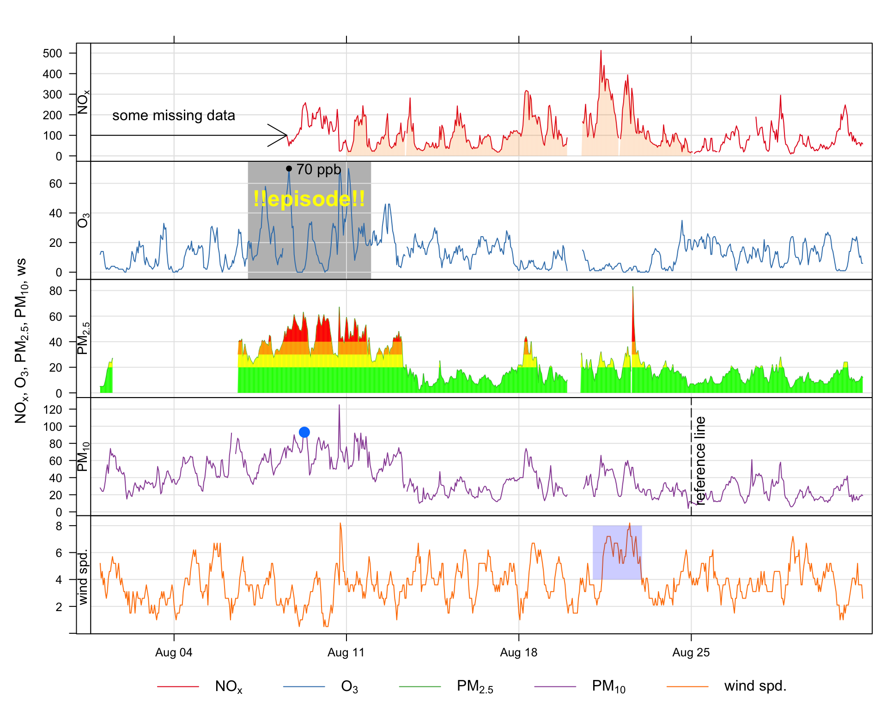
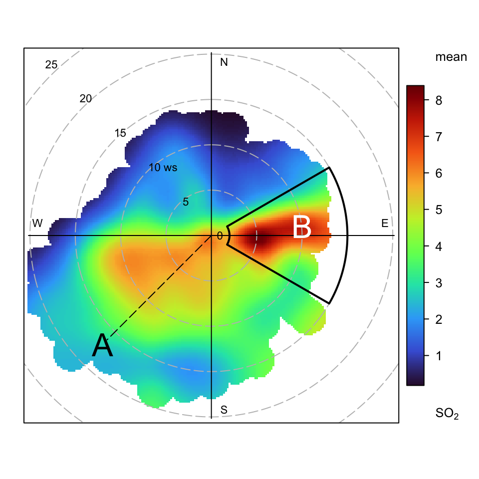

timePlot.A frequently asked question about openair and requested feature is how to annotate plots. While all openair functions could have options to allow annotations to be made, this would make the functions cumbersome and reduce flexibility. Nevertheless, it is useful to be able to annotate plots in lots of different ways. Fortunately there are existing functions in packages such as lattice and latticeExtra that allow for plots to be updated. An example of the sorts of annotation that are possible is shown in Figure A.1, which is an enhanced version of a timePlot Figure. These annotations have been subsequently added to a basic plot and built up in layers. This section considers how to annotate openair plots more generally and uses Figure A.1 as an example of the types of annotation possible. Also considered specifically is the annotation of plots that are in polar coordinates, as these can sometimes benefit from different types of annotation.
There are several types of objects that can be useful to add to plots including text, shapes, lines and other shading. Given that many openair plots can consist of multiple panels, it is also useful to think about how to annotate specific panels. The examples given in this section will apply to all openair plot, the only difference being the coordinate system used in each case.
The basis of openair annotations is through the use of the latticeExtra package, which should already be installed as part of openair. In that package there is a function called layer that effectively allows annotations to be built up ‘layer by layer’.

timePlot.To add text (or other annotations) it is necessary to know the coordinates on a plot for where the text will go, which will depend on the data plotted. In this extended example using the timePlot function, the y-axis will be in ordinary numerical units, whereas the x-axis will be in a date-time format (POSIXct).
There are various ways that annotations can be added, but the method used here is to add to the previous plot using a function called trellis.last.object() to which we want to add a later. This may seem complicated, but once a few examples are considered, the method becomes very powerful, flexible and straightforward. In a multi-panel plot such as Figure A.1 it is also useful to specify which rows/columns should be added to. If they are not specified then the annotation will appear in all panels.
First, a plot should be produced to which we wish to add some text.
## make sure latticeExtra is loaded
library(openair)
library(lubridate)
library(latticeExtra)
timePlot(selectByDate(mydata, year = 2003, month = "aug"),
pollutant = c("nox", "o3", "pm25", "pm10", "ws"),
y.relation = "free")So, considering @ref(fig:timePlotAnnotate), this is how the text `some missing data’ was added to the top panel.
trellis.last.object() +
layer(ltext(x = ymd_hm("2003-08-04 12:00"), y = 200,
labels = "some missing data"), rows = 1)So what does this do? First, the trellis.last.object() is simply the last plot that was plotted. Next the layer function is used to add some text. The text itself is added using the ltext lattice function. It is worth having a look at the help for ltext as that gives an overview of all the common annotations and other options. We have chosen to plot the text at position x = ‘2003-08-04’ and y = 200 and the label itself. A useful option to ltext is pos. Values can be 1, 2, 3 and 4, and indicate positions below (the default), to the left of, above and to the right of the specified coordinates
This time we will highlight an interval in row 2 (O3) and write some text on top. Note that this time we use the lpolygon function and choose to put it under everything else on the plot. For the text, we have chosen a colour (yellow) font type 2 (bold) and made it a bit bigger (cex = 1.5). Note also the y values extend beyond the actual limits shown on the plot — just to make sure they cover the whole region.
The polygon could of course be horizontal and more than one producing a series of ‘bands’ e.g. air quality indexes. A more sophisticated approach is shown later for PM2.5
## add shaded polygon
trellis.last.object() +
layer(lpolygon(x = c(ymd_hm("2003-08-07 00:00"),
ymd_hm("2003-08-07 00:00"), ymd_hm("2003-08-12 00:00"),
ymd_hm("2003-08-12 00:00")), y = c(-20, 600, 600, -20),
col = "grey", border = NA), under = TRUE, rows = 2)
## add text
trellis.last.object() +
layer(ltext(x = ymd_hm("2003-08-09 12:00"), y = 50,
labels = "!!episode!!", col = "yellow",
font = 2, cex = 1.5), rows = 2)The small shaded, semi-transparent area shown in the bottom panel was added as follows:
The arrow shown on the first panel of Figure A.1 was added as follows. Note the code = 3 placed arrows at both ends. Note that angle is the angle from the shaft of the arrow to the edge of the arrow head.
trellis.last.object() +
layer(larrows(ymd_hm("2003-08-01 00:00"), 100,
ymd_hm("2003-08-08 14:00"),
100, code = 3, angle = 30), rows = 1)This code adds a vertical dashed reference line shown in the 4th panel (PM10) along with some text aligned at 90 degrees using the srt option of ltext.
trellis.last.object() +
layer(panel.abline(v = ymd_hm("2003-08-25 00:00"), lty = 5),
rows = 4)
trellis.last.object() +
layer(ltext(x = ymd_hm("2003-08-25 08:00"), y = 60,
labels = "reference line", srt = 90), rows = 4)Up until now annotations have been added using arbitrary coordinates in each panel. What if we wanted to highlight a particular point, or more generally work with the actual data that are plotted. Knowing how to refer to existing data greatly extends the power of these functions.
It is possible to refer to a specific point in a panel simply by indexing the point of interest i.e. x, y. For example, to mark the 200th PM10 concentration (without knowing the actual date or value):
## add a specific point
trellis.last.object() +
layer(lpoints(x[200], y[200], pch = 16, cex = 1.5),
rows = 4)What if we wanted to highlight the maximum O3 concentration? It is possible to work out the index first and then use that to refer to that point. Note the } to allow for the code to span multiple commands.
## add a point to the max O3 concentration
trellis.last.object() +
layer({maxy <- which.max(y);
lpoints(x[maxy], y[maxy], col = "black", pch = 16)},
rows = 2)
## label max ozone
trellis.last.object() +
layer({maxy <- which.max(y);
ltext(x[maxy], y[maxy], paste(y[maxy], "ppb"),
pos = 4)}, rows = 2)It can be seen in the top panel of Figure A.1 that some data are highlighted by filling the area below the line. This approach can be useful more generally in plotting. While it is possible to draw polygons easily and refer to the data itself, there needs to be a way for dealing with gaps in data, otherwise these gaps could be filled in perhaps unpredictable ways. A function has been written to draw a polygon taking into account gaps (poly.na).
This time we work out the ids of the data spanning an area of interest. Then the poly.na function is used. Note that the alpha transparency is by default 0.2 but another value can easily be supplied, as shown in the air quality ‘bands’ example.
It is a simple extension to go from using a polygon below the data to polygons at certain intervals e.g. air quality indexes. These are shown for PM2.5 and the bands considered are 0–20, 20–30, 30–40 and >40.
trellis.last.object() +
layer(poly.na(x, y, x, rep(0, length(x)),
col = "green", alpha = 1), rows = 3)
trellis.last.object() +
layer(poly.na(x, ifelse(y <20, NA, y), x,
rep(20, length(x)), col = "yellow", alpha = 1),
rows = 3)
trellis.last.object() +
layer(poly.na(x, ifelse(y <30, NA, y),
x, rep(30, length(x)),
col = "orange", alpha = 1), rows = 3)
trellis.last.object() +
layer(poly.na(x, ifelse(y <40, NA, y),
x, rep(40, length(x)),
col = "red", alpha = 1), rows = 3)Many of the examples considered above are relevant to all other functions e.g. how to add text, choosing rows and columns to plot in. Polar coordinate plots are different because of the coordinate system used and this section considers a few examples.
One useful approach is to be able to draw an arc, perhaps highlighting an area of interest. A simple, but flexible function has been written to do this. It takes arguments theta1 and theta2 that define the angular area of interest and lower and upper to set the lower and upper wind speed, respectively. It also has additional arguments theta3 and theta4 which optionally set the angles for the ‘upper’ wind speed.
arc <- function(theta1 = 30, theta2 = 60, theta3 = theta1, theta4 = theta2,
lower = 1, upper = 10){
## function to work out coordinates for an arc sector
if (theta2 < theta1) {
ang1 <- seq(theta1, 360, length = abs(theta2 - theta1))
ang2 <- seq(0, theta2, length = abs(theta2 - theta1))
angles.low <- c(ang1, ang2)
## for upper angles
ang1 <- seq(theta1, 360, length = abs(theta4 - theta3))
ang2 <- seq(0, theta2, length = abs(theta4 - theta3))
angles.high <- c(ang1, ang2)
} else {
angles.low <- seq(theta1, theta2, length = abs(theta2 - theta1))
angles.high <- seq(theta3, theta4, length = abs(theta4 - theta3))
}
x1 <- lower * sin(pi * angles.low / 180)
y1 <- lower * cos(pi * angles.low / 180)
x2 <- rev(upper * sin(pi * angles.high / 180))
y2 <- rev(upper * cos(pi * angles.high / 180))
data.frame(x = c(x1, x2), y = c(y1, y2))
}
Following on from the previous examples, some annotations have been added to the basic polar plot for SO2 as shown in Figure A.2. Note that in these plots (0, 0) is the middle of the plot and the radial distance will be determined by the wind speed — or whatever the radial variable is. This way of plotting arcs can also be applied to other functions that show directional data.
polarPlot(mydata, pollutant = "so2", col = "turbo")
trellis.last.object() + layer(ltext(-12, -12, "A", cex = 2))
trellis.last.object() + layer(ltext(10, 2, "B", cex = 2, col = "white"))
trellis.last.object() + layer(lsegments(0, 0, -11.5, -11.5, lty = 5))
## add and arc to highlight area of interest
trellis.last.object() +
layer(lpolygon(x = arc(theta1 = 60, theta2 = 120, lower = 2,
upper = 15)$x, y = arc(theta1 = 60,
theta2 = 120, lower = 2,
upper = 15)$y, lty = 1, lwd = 2))The examples above provide a precise way of annotating plots for single or multi-panels openair displays. However, these methods won’t work for plots that consist of completely separate plots such as the four plots in timeVariation. There are however other methods that can be used to annotate such plots using the package grid, which forms the basis of lattice graphics. There is enormous capability for annotating plots using the grid package and only a few simple examples are given here.
Given a a basic timeVariation plot, how could texts be added at any location — say in the middle monthly plot? One very useful function for this type of annotation that allows the user to interactively choose a location is the grid.locator() function in the grid package. That function can be called with different coordinate systems — but the one we want defines the bottom-left corner as (0, 0) and the top right as (1, 1).
First, make a timeVariation plot.
timeVariation(mydata)Now let’s choose a location on the plot interactively using the mouse and selecting somewhere in the middle of the monthly plot.
library(grid)
## bring up the interactive location chooser
grid.locator(unit = "npc")What should happen is that in the R console the coordinates are given for that point. In my case these were x = 0.503 and y = 0.338. These coordinates can now be used as the basis of adding some text or other annotation. In the example below, the grid.text function is used to add some text for these coordinates making the font bigger (cex = 2), bold (font = 2) and blue (col = "blue").
Even with this basic approach, some sophisticated annotation is possible with any openair plot. There are many other functions that can be used from the grid package that would allow for polygons, segments and other features to be drawn is a similar way to the examples earlier in this section. Continuing with the same example, here is how to add an arrow pointing to the maximum concentration shown on the top plot for Saturday (again using the grid.locator function).
grid.lines(x = c(0.736, 0.760), y = c(0.560, 0.778),
arrow = arrow())
grid.text(x = 0.736, y = 0.560, label = "maximum", just = "left")